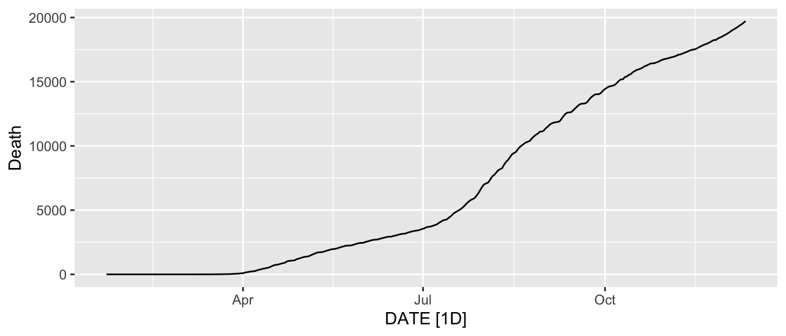
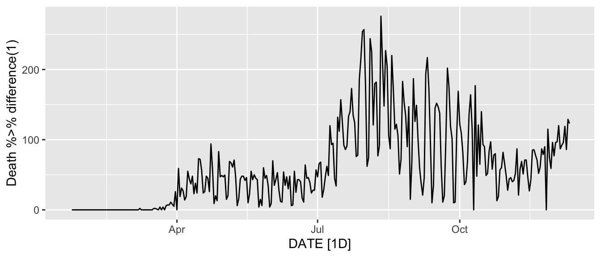
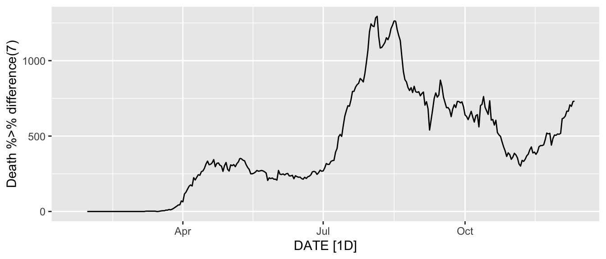
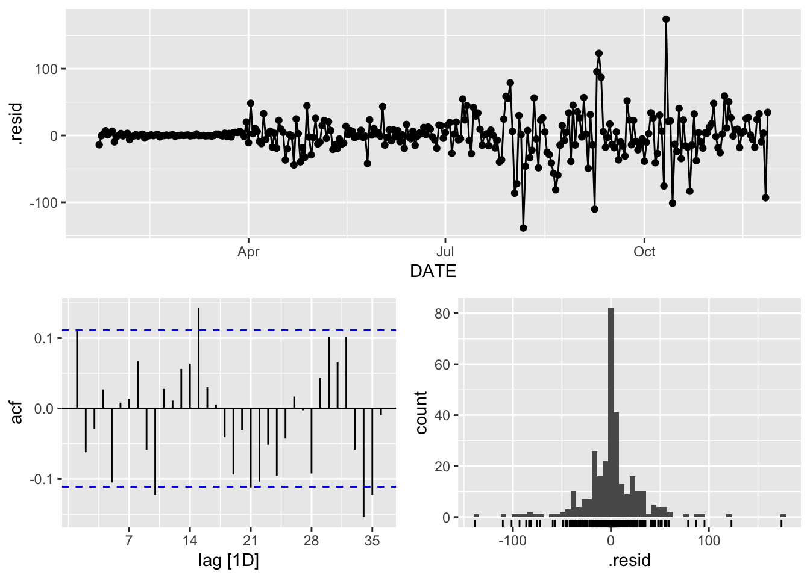
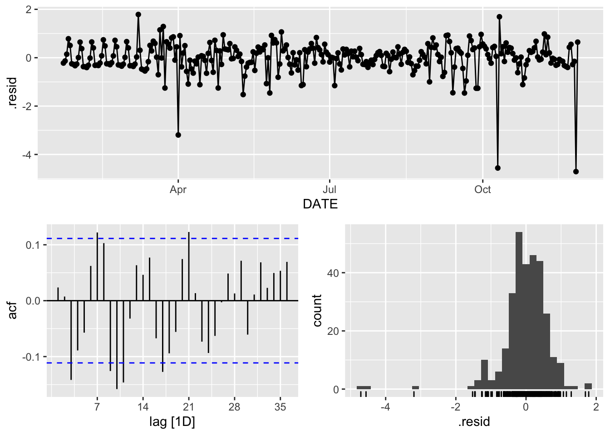

Chapter 10 Time Series Analysis of Infectious Disease Data
Predicting the severity and speed of transmission of disease is crucial to resource management and developing strategies to deal with this epidemic. Forecasting goals can also be classified as long-term or short-term forecasts. Long-term disease forecasts can predict the peak or severity, while short-term forecasts can be used to guide resource allocation in the short term by local agencies or to anticipate the case burden by hospitals in the coming week; see Altieri et al. (2020).
In this chapter, we provide a predictive analysis of the spread of infectious disease in a given area. Our main objective is to provide short-term predictions of the number of infected people or deaths. We use a well-known method in Statistics for prediction: time series analysis. In time series analysis, we focus on using the past observations of a random variable to capture the underlying patterns and predict the future values.
10.1 Datasets and R Packages
Data
The dataset from JHU contains the cumulative number of cases reported daily for different countries. We base our analysis on the state-level time series. For each state, we consider the time-series \(y_n\) starting from the day when the first case was reported. Given the current day index \(n\), we predict the number of cases for the day \(n + h\) by considering as input the number of cases reported for the past \(w\) days, that is, for the days \(n-w+1\) to \(n\).
#install_github('covid19-dashboard-us/slid')
library(slid)
data(state.long)R Package: fable
We will use the R packages fable, tsibble and dplyr, which together offer various functions for computing and visualizing basic time series components.
library(dplyr)
library(fable)
library(tsibble)The R package “fable” provides a collection of commonly used univariate and multivariate time series forecasting models including exponential smoothing via state space models and autoregressive integrated moving average (ARIMA) modeling. The “fable” package provides the tools to evaluate, visualize, and combine models in a workflow consistent with the “tidyverse.”
The Forecasting: Principles and Practices online textbook provides an introduction to time series forecasting using fable.
10.2 An Introduction to Time Series Analysis
Time series is a set of observations recorded sequentially. The first thing to do in any time series analysis task is to plot the data. Graphs enable many features of the data to be visualized, including patterns, unusual observations, changes over time, and relationships between variables. The features that are seen in plots of the data must then be incorporated, as much as possible, into the forecasting methods to be used. Just as the type of data determines what forecasting method to use, it also determines what graphs are appropriate. But before we produce graphs, we need to set up our time series in R.
10.2.1 “tsibble” objects
A time series can be thought of as a list of numbers, along with some information about what times those numbers were recorded. This information can be stored as a “tsibble” object in R. Beyond the tibble-like representation, key comprised of single or multiple variables is introduced to uniquely identify observational units over time (index). Each observation should be uniquely identified by index and key in a valid “tsibble” object.
Take the state.long data for example,
state.long## # A tibble: 15,925 x 7
## State Region Division pop DATE Infected Death
## <fct> <fct> <fct> <int> <date> <int> <int>
## 1 Alaba… South East Sout… 4.89e6 2020-12-11 288775 4086
## 2 Alaba… South East Sout… 4.89e6 2020-12-10 284922 4034
## 3 Alaba… South East Sout… 4.89e6 2020-12-09 280187 3985
## 4 Alaba… South East Sout… 4.89e6 2020-12-08 276665 3940
## 5 Alaba… South East Sout… 4.89e6 2020-12-07 272228 3891
## 6 Alaba… South East Sout… 4.89e6 2020-12-06 269877 3888
## 7 Alaba… South East Sout… 4.89e6 2020-12-05 267589 3876
## 8 Alaba… South East Sout… 4.89e6 2020-12-04 264199 3831
## 9 Alaba… South East Sout… 4.89e6 2020-12-03 260359 3776
## 10 Alaba… South East Sout… 4.89e6 2020-12-02 256828 3711
## # … with 15,915 more rowsWe can turn this into a “tsibble” object using the as_tsibble() function:
state.ts <- as_tsibble(state.long, key = State)
## Using `DATE` as index variable.
state.ts
## # A tsibble: 15,925 x 7 [1D]
## # Key: State [49]
## State Region Division pop DATE Infected Death
## <fct> <fct> <fct> <int> <date> <int> <int>
## 1 Alaba… South East Sout… 4.89e6 2020-01-22 0 0
## 2 Alaba… South East Sout… 4.89e6 2020-01-23 0 0
## 3 Alaba… South East Sout… 4.89e6 2020-01-24 0 0
## 4 Alaba… South East Sout… 4.89e6 2020-01-25 0 0
## 5 Alaba… South East Sout… 4.89e6 2020-01-26 0 0
## 6 Alaba… South East Sout… 4.89e6 2020-01-27 0 0
## 7 Alaba… South East Sout… 4.89e6 2020-01-28 0 0
## 8 Alaba… South East Sout… 4.89e6 2020-01-29 0 0
## 9 Alaba… South East Sout… 4.89e6 2020-01-30 0 0
## 10 Alaba… South East Sout… 4.89e6 2020-01-31 0 0
## # … with 15,915 more rowsThe summary above shows that this is a “tsibble” object, which contains 15,925 rows and 7 columns. The object is uniquely identified by the key: State. It informs us that there are separate time series in the “tsibble” for each of the 49 states in the US.
A “tsibble” allows multiple time series to be stored in a single object. The state.long dataset contains the infected count, death count for each mainland state in the US and District of Columbia.
10.2.2 Working with “tsibble” objects
Several functions in the “dplyr” package can be used to work with “tsibble” objects, including mutate() and select(). To illustrate these further and some other useful functions, we will use the state.ts tsibble created in the above.
state.ts <- as_tsibble(state.long, key = State) %>%
group_by(State) %>%
mutate(Infected = Infected/1000) %>%
mutate(YDA_Infected = lag(Infected, order_by = DATE)) %>%
mutate(YDA_Death = lag(Death, order_by = DATE)) %>%
mutate(Y.Infected = Infected - YDA_Infected) %>%
mutate(Y.Death = Death - YDA_Death) %>%
dplyr::filter(!is.na(Y.Infected)) %>%
dplyr::filter(!is.na(Y.Death)) %>%
dplyr::select(-c(YDA_Infected, YDA_Death))
## Using `DATE` as index variable.
state.ts
## # A tsibble: 15,876 x 9 [1D]
## # Key: State [49]
## # Groups: State [49]
## State Region Division pop DATE Infected Death
## <fct> <fct> <fct> <int> <date> <dbl> <int>
## 1 Alab… South East So… 4.89e6 2020-01-23 0 0
## 2 Alab… South East So… 4.89e6 2020-01-24 0 0
## 3 Alab… South East So… 4.89e6 2020-01-25 0 0
## 4 Alab… South East So… 4.89e6 2020-01-26 0 0
## 5 Alab… South East So… 4.89e6 2020-01-27 0 0
## 6 Alab… South East So… 4.89e6 2020-01-28 0 0
## 7 Alab… South East So… 4.89e6 2020-01-29 0 0
## 8 Alab… South East So… 4.89e6 2020-01-30 0 0
## 9 Alab… South East So… 4.89e6 2020-01-31 0 0
## 10 Alab… South East So… 4.89e6 2020-02-01 0 0
## # … with 15,866 more rows, and 2 more variables:
## # Y.Infected <dbl>, Y.Death <int>This tsibble use the mutate() to create two extra variables: Y.Infected and Y.Death, which are the daily new infected count and the daily new death count for each state.
We can use the filter() function to extract the data for the state of Florida, for example:
Florida.ts <- state.ts %>%
dplyr::filter(State == "Florida")Next, we can simplify the resulting object by selecting five variables we will need in subsequent analysis.
Florida.ts <- Florida.ts %>%
dplyr::select(Infected, Death, Y.Infected, Y.Death)
## Adding missing grouping variables: `State`
Florida.ts
## # A tsibble: 324 x 6 [1D]
## # Key: State [1]
## # Groups: State [1]
## State Infected Death Y.Infected Y.Death DATE
## <fct> <dbl> <int> <dbl> <int> <date>
## 1 Florida 0 0 0 0 2020-01-23
## 2 Florida 0 0 0 0 2020-01-24
## 3 Florida 0 0 0 0 2020-01-25
## 4 Florida 0 0 0 0 2020-01-26
## 5 Florida 0 0 0 0 2020-01-27
## 6 Florida 0 0 0 0 2020-01-28
## 7 Florida 0 0 0 0 2020-01-29
## 8 Florida 0 0 0 0 2020-01-30
## 9 Florida 0 0 0 0 2020-01-31
## 10 Florida 0 0 0 0 2020-02-01
## # … with 314 more rowsNote that the index variable DATE would be returned even if it was not explicitly selected as it is required for a tsibble.
10.2.3 Drawing time series plots
To further examine the data, we now use the autoplot() to draw some time series plot; see Figure 10.1.
Florida.ts %>%
autoplot(Y.Death)
Figure 10.1: The time series plot of the daily new death count in Florida using the autoplot() function.
We can also use the “ggplot2” to draw some time series plot. Figure 10.2 shows the time series plot with blue line.
library(ggplot2)
ggplot(Florida.ts, aes(x = DATE, y = Y.Death)) +
geom_line(color = "blue") +
labs(title = 'Florida daily new death count') 
Figure 10.2: The time series plot of the daily new death count in Florida using the ggplot() function.
We can draw multiple time series on the same plot using “ggplot2.” The time series plot shown in Figure 10.3 illusterate the daily new infected and death counts in Florida.
ggplot(Florida.ts, aes(x = DATE)) +
geom_line(aes(y = Y.Infected, colour = "Y.Infected (thousand)")) +
geom_line(aes(y = Y.Death, colour = "Y.Death")) +
ylab("Count") + xlab("Day") +
guides(colour=guide_legend(title = "Forecasts")) +
theme(legend.position="bottom")
Figure 10.3: The time series plot of the daily new infected and death counts in Florida.
Figure 10.4 shows the time series plot of the daily new death count for each of the midwest states using the ggplot() function.
state.ts %>%
dplyr::filter(Region== "Midwest") %>%
ggplot(aes(x = DATE, y = Y.Death,
group = State, color = State)) +
geom_line() +
theme(legend.position="bottom")
Figure 10.4: The time series plot of the daily new death count for each of the midwest states using the ggplot() function.
We can also use the autoplot() function to draw multiple time series on one plot. Figure 10.5 shows the time series plot of the daily new death count for each of the midwest states using the autoplot() function.
state.ts %>%
dplyr::filter(Region== "Midwest") %>%
autoplot(Y.Death) +
ylab("Deaths") + xlab("Day") +
ggtitle("Daily new death count for each of the midwest")## `mutate_if()` ignored the following grouping variables:
## Column `State`
Figure 10.5: The time series plot of the daily new death count for each of the midwest states using the autoplot() function.
After making the time series plots, we look for
Trend: upward or downward movement that might be extrapolated into future; it does not have to be linear.
Periodicity: repetition in regular pattern (usually peaks and troughs;
Seasonality: periodic behavior of known period (i.e., 12 months for monthly data);
Heteroskedasticity: changing variance, particularly with changing level;
Dependence: positive (successive observations are similar) or negative (successive observations are dissimilar);
Missing data, structural breaks, outliers.
Remark: Some readers confuse cyclic behavior with seasonal behavior, but they are really quite different. If the fluctuations are not of a fixed frequency, then they are cyclic; if the frequency is unchanging and associated with some aspect of the calendar, then the pattern is seasonal.
Time series seasonal plot
We can produce a time series seasonal plot using gg_season() function in the “feast” R package, which provides a collection of features, decomposition methods, statistical summaries and graphics functions for analyzing tidy time series data.
A seasonal plot is similar to a regular time series plot, except the x-axis shows data from within each season. This plot type allows the underlying seasonal pattern to be seen more clearly, and is especially useful in identifying the time in which the pattern changes. Figure 10.6 shows the time series weekly plot of the daily new death count.
library(feasts)
Florida.ts %>% gg_season(Y.Death, period = "week")
Figure 10.6: The time series weekly plot of the daily new death count.
A lag plot
We can draw a lag plot to show the time series against lags of itself using the gg_lag() in the R library feasts.
library(feasts)
Florida.ts %>%
gg_lag(y = Y.Death, geom = "point")
Figure 10.7: The lag plot of the daily new death count for Florida.
It is often colored the seasonal period (here weekly cycle) to identify how each season (each date in a week) correlates with others. From Figure 10.7, one sees that the relationship is strongly positive at lag 7, reflecting the strong weekly cycle in the data.
10.2.4 Objectives of Time Series Analysis
- Provide an interpretable model of data
- often involves multivariate series
- allows testing of scientific hypotheses
- but, not always a major emphasis in time series analysis
- Predict future values of series
- very common application of time series analysis
- predictive models often do not try to explain
- Provide a compact description of data
- good predictive model can be used for data compression
- used extensively in telecommunications
Modeling Strategy
- Take a probabilistic approach
- observations \(=\) realizations of random variables
- in much of statistics, random variables are assumed to be indepedent
- Difficulties in time series:
- random variables are typically not identically distributed
- different means due to trend, seasonality
- may be different variances as well
- random variables typically not independent
- dependence may be positive or negative
- Try to make things easier
- eliminate heterostedasticity via transformation (e.g. log)
- eliminate trend and seasonality
- model remainder as dependent but identically distributed
10.2.5 Stationarity
Let \(\{X_t\}\) be a time series with \(E(X_t^2)<\infty\).
- The mean function of \(\{X_t\}\) is \[ \mu_X(t)=\mathrm{E}(X_t). \]
- The covariance function of \(\{X_t\}\) is \[ \gamma_X(s,t)=\mathrm{Cov}(X_t,X_s) = \mathrm{E}[(X_s-\mu_X(s))(X_t-\mu_X(t))] \] for all integers \(s\) and \(t\).
Modeling Dependence
- Hard to model dependence if dependence changes with time
- Easiest to model dependence in stationary case
Roughly speaking, stationary means probabilistic properties of series do not change with time. There are two versions of interest.
- Strict stationarity: joint probability distributions do not change with time.
A time series \(\{X_t\}\) is strictly stationary if for any positive integer \(k\) and integers \(t_1, \ldots, t_k\) and \(h\), \[ (X_{t_1},X_{t_2},\ldots,X_{t_k}) \overset{d}{=} (X_{t_1+h},X_{t_2+h},\ldots,X_{t_k+h}) \] where ``\(\overset{d}{=}\)’’ denotes equality in probability distribution.
Remark: covariances make sense only if variances exist
- If \(\{X_t\}\) is IID, then \(\{X_t\}\) is strictly stationary
- Strict stationarity is a very strong modeling assumption
- hard to verify in practice
- often stronger than necessary for useful results \(\Rightarrow\) introduce next so-called weak stationarity
- Weak stationarity: 1st and 2nd order moment properties (i.e., mean and covariance structures) do not change over time
A time series \(\{X_t\}\) is weakly stationary if for all integers \(t\) and \(h\):
- \(\mathrm{Var}(X_t)<\infty\)
- \(E[X_t]\) does not depend on \(t\)
- \(\mathrm{Cov}(X_t,X_{t+h})\) does not depend on \(t\)
Notes
- implies all means, variances, and covariances exist
- implies means are constant (rules out trend, seasonality)
- with \(h = 0\), (c) implies variances are constant (rules out heteroskedasticity)
Weakly stationary also known as covariance stationary, second order stationary, or just stationary
* 1st and 2nd-order moments do not change with time * much weaker than strict stationarity
10.2.6 Autocorrelation
- Autocovariance Function (ACVF)
For weakly stationary time series, \(\mathrm{Cov}(X_{t},X_{t+h})=\gamma(h)\), a function of \(h\) only.
- Autocorrelation Function (ACF)
The autocorrelation function (ACF) of \(\{X_t\}\) is defined by \[ \rho(h)=\frac{\gamma(h)}{\gamma(0)}=\frac{\mathrm{Cov}(X_{t},X_{t+h})}{\sqrt{\mathrm{Var}(X_{t})\mathrm{Var}(X_{t+h})}} \]
- Sample ACVF
Let \(\{X_t\}_{t=1}^n\) be a time series and \(\bar{X}_{n}=\frac{1}{n}\sum_{t=1}^{n}X_t\) be its sample mean. The sample ACVF (based on \(\{X_t\}_{t=1}^n\)): \[ \hat{\gamma}(h)\equiv \frac{1}{n}\sum_{t=1}^{n-|h|} (X_{t}-\bar{X}_{n})(X_{t+|h|}-\bar{X}_{n}), ~|h|<n \] which estimates \(\gamma(h)=E[(X_t-EX_t)(X_{t+|h|}-EX_t)]\).
- Sample ACF
The sample ACF based on \(\{X_t\}_{t=1}^n\) is defined as \[ \hat{\rho}(h)\equiv \hat{\gamma}(h)/\hat{\gamma}(0), ~|h|<n \] which estimates \(\rho(h)=\gamma(h)/\gamma(0)\), \(|\hat{\rho}(h)|\leq 1\), \(\hat{\rho}(0)=1\).
The autocorrelation coefficients are plotted to show the autocorrelation function or ACF. Figure 10.8 shows the ACF plot of the daily new death count in Florida.
Florida.ts %>%
ACF(Y.Death) %>%
autoplot()
Figure 10.8: The ACF plot of the daily new death count in Florida.
The dashed blue lines in this graph indicate whether the correlations are significantly different from zero, and \(\hat{\rho}(4)\) is higher than for the other lags. This is due to the weekly pattern in the data: the peaks tend to be four quarters apart, and the troughs tend to be four quarters apart.
Remark:
When data have a trend, the autocorrelations for small lags tend to be large and positive because observations nearby in time are also nearby in size. So the ACF of the time series with a trend tends to have positive values that slowly decrease as the lags increase.
When data are seasonal, the autocorrelations will be larger for the seasonal lags (at multiples of the seasonal frequency) than for other lags.
Florida.ts %>%
gg_tsdisplay(difference(Y.Death, 7), plot_type='partial', lag=36) +
labs(y="Lag 7 differenced")
Figure 10.9: Time plot, ACF plot and PACF plot of lag-7 differenced data.
10.3 Time Series Decomposition
Time series data can exhibit various patterns, and it is often helpful to split a time series into several components, each representing an underlying pattern category. In the literature, a time series is usually decomposed into three components: a trend component, a seasonal component, and a remainder component. In the following, we consider the following classical decomposition: \[ X_t=m_t+s_t+Y_t \] where \(m_t\) is the trend at \(t\) (non-random often), \(s_t\): a function with known period \(d\) referred to as seasonality (non-random), and \(Y_t\): irregular and random noise that is stationary.
Our aims are the following:
- to estimate and extract \(m_t\) and \(s_t\) so that the residual \(Y_t\) will turn out to be stationary;
- to find a satisfactory probabilistic model for \(Y_t\);
- use it in conjunction with \(m_t\) and \(s_t\) for prediction and simulation of \(\{X_t\}\).
10.3.1 Box-Cox transformations
When decomposing a time series, it is sometimes helpful to first transform or adjust the series in order to make the decomposition (and later analysis) as simple as possible. Transformations help to stabilize the variance. So we will begin by discussing transformations and adjustments.
Each of these transformations is close to a member of the family of Box-Cox transformations: \[ W_t =\left\{\begin{array}{ll} \log(Y_t), & \lambda=0;\\ (Y_t^{\lambda}-1)/\lambda, & \lambda \neq 0. \end{array} \right. \]
- \(\lambda= 1\): (No substantive transformation);
- \(\lambda= 1/2\): (Square root plus linear transformation);
- \(\lambda= 0\): (Natural logarithm). This is a simple way to force forecasts to be positive;
- \(\lambda= -1\): (Inverse plus 1);
- \(Y_t^{\lambda}=1\) for \(\lambda\) close to zero behaves like logs;
- If some \(Y_t = 0\), then must have \(\lambda > 0\);
- If some \(Y_t < 0\), no power transformation is possible unless all \(Y_t\) adjusted by adding a constant to all values;
- Choose a simple value of \(\lambda\), which makes explanation easier;
- Results are relatively insensitive to value of \(\lambda\).
We must reverse the transformation (or back-transform) to obtain forecasts on the original scale. The reverse Box-Cox transformations are given by \[ Y_t=\left\{\begin{array}{ll} \exp(W_t), & \lambda=0;\\ (\lambda W_t+1)^{1/\lambda}-1, & \lambda \neq 0. \end{array} \right. \]
10.3.2 Methods for estimating the trend
- Polynomial regression
Simplest curve fit or approximation model, where the number of cases is approximated locally with polynomials of degree \(d\). \[ Y_t = \beta_0 + \beta_1 t + \beta_2 t^2 + \cdots + \beta_d t^d + Z_t, \] where \(\{Z_t\}\) are IID gaussian noise.
Figure 10.10 of the 14 days ahead forecast of the daily death count for Florida using the linear regression method.
death_lmfit <- Florida.ts %>%
model(TSLM(Y.Death ~ DATE)) 
Figure 10.10: Two weeks ahead forecast of the daily death count for Florida using the linear regression method.
Figure 10.10 shows the 14 days ahead forecast of the daily death count for Florida using the linear regression method with the seasonal component: season(7).
death_lmsfit <- Florida.ts %>%
model(TSLM(Y.Death ~ DATE + season(7))) 
Figure 10.11: Two weeks ahead forecast of the daily death count for Florida using the linear regression method with the seasonal component.
- Moving average filtering
For an integer \(q\geq 0\), and filtering parameters \(\{a_{-q},a_{-q+1},\ldots, a_0,a_1,\ldots,a_{q}\}\), we consider the following moving average filter: \[ \hat{m}_{t}=\sum_{k=-q}^{q}a_{k}X_{t-k}, ~ q+1 \leq t \leq n-q. \] For example, if \(a_{k}=1/(1+2q)\), then \[ \hat{m}_{t}=\frac{1}{1+2q}\sum_{k=-q}^{q} m_{t-k}+\frac{1}{1+2q}\sum_{k=-q}^{q}Y_{t-k} \] is the two-sided moving average. We call this an \(m\)-MA smoothing, meaning a moving average of order \(m=1+2q\). This method allows linear trend function \(m_t=c_0+c_1t\) to pass without distortion: \[ \sum_{k=-q}^{q}a_{k}m_{t-k}=m_t. \]
Remarks:
The \(m\)-MA can be easily done using slide_dbl() from the “slider” package which applies a function to “sliding” time windows. We can use the mean() function to specify the window size.
- For small \(q\), \(\hat{m}_{t}\) is closer to \(m_t\), less bias, more variance;
- For large \(q\), more bias, less variance;
- This is so called variance-bias trade-off in filtering.
For example, we consider \(q=2\) and \(q=7\) below to have a 5-MA smoothing and a 15-MA smoothing, respectively.
Florida.ts.MA5 <- Florida.ts %>%
mutate(
`5-MA` = slider::slide_dbl(Y.Death, mean,
.before = 2, .after = 2, .complete = TRUE)
)
Florida.ts.MA15 <- Florida.ts %>%
mutate(
`15-MA` = slider::slide_dbl(Y.Death, mean,
.before = 7, .after = 7, .complete = TRUE)
)To see what the trend-cycle estimate looks like, we plot the above two moving average trends along with the original data in Figure 10.12.
Florida.ts %>% autoplot(Y.Death) +
autolayer(Florida.ts.MA5, `5-MA`, color = "green") +
autolayer(Florida.ts.MA15, `15-MA`, color = "red") +
labs(y = "Death count",
title = "Florida daily new death count with moving average trend") +
guides(colour = guide_legend(title = "series"))
Figure 10.12: Florida daily new death count with the 5-MA (green) and 15-MA (red) smoothing of the trend.
- Simple exponential smoothing
Consider the following nonseasonal model with trend: \[ Y_t=m_t+Z_t, \] where \(\mathrm{E}Z_t=0\).
We can estimate \(m_t\) using simple exponential smoothing. For any fixed \(0<\alpha<1\), consider \(\hat{m}_t\) defined by the following recursions:
\[\begin{eqnarray*} \hat{m}_1 &=& Y_1, \mathrm{~~and}\\ \hat{m}_t &=& \alpha Y_t+(1-\alpha)\hat{m}_{t-1}\\ &=& \alpha Y_t+(1-\alpha)\{\alpha Y_{t-1}+(1-\alpha)\hat{m}_{t-2}\}\\ &=& \alpha Y_t+(1-\alpha)\alpha Y_{t-1}+(1-\alpha)^2\alpha X_{t-2}+(1-\alpha)^3\hat{m}_{t-3}\\ &=& \ldots \end{eqnarray*}\]
with exponentially decreasing weights on previous observations: \(\alpha(1-\alpha)^0\) on \(Y_t\), \(\alpha(1-\alpha)^1\) on \(Y_{t-1}\), \(\alpha(1-\alpha)^2\) on \(Y_{t-2}\), \(\ldots\)
- \(\alpha\rightarrow 1\), less bias, more variance;
- \(\alpha\rightarrow 0\), more bias, less variance.
This method is suitable for forecasting data with no clear trend or seasonal pattern. The function ETS function returns forecasts and other information for the exponential smoothing forecasts. There are several versions of the ETS models; see Hyndman and Athanasopoulos (2018b). You can specify the details of the ETS model by choosing different options in the error, trend and season specials.
- The form of the error term: either additive (“A”) or multiplicative (“M”). If the error is multiplicative, the data must be non-negative.
- The form of the trend term: either none (“N”), additive (“A”), multiplicative (“M”) or damped variants (“Ad,” “Md”).
- The form of the seasonal term: either none (“N”), additive (“A”) or multiplicative (“M”)
ets_fit <- Florida.ts %>%
model(ETS(Y.Death
~ error("A") + trend("N") + season("N"),
opt_crit = "mse")) 
Figure 10.13: Two weeks ahead forecast of the daily death count for Florida using the simple exponential smoothing method.
The ETS() also allows you to extend the simple exponential smoothing to allow the forecasting of data with a trend and seasonality.
etss_fit <- Florida.ts %>%
model(`ETS` = ETS(Y.Death
~ error("A") + trend("A") + season("A"))) 
Figure 10.14: Two weeks ahead forecast of the daily death count for Florida using the extended exponential smoothing method with trend and seasonality components.
Figure 10.15 display the observed and fitted daily death count using the extended exponential smoothing method with trend and seasonality components.
Figure 10.15: Time series plot of the observed and fitted daily death count.
10.3.3 Seasonal component
The methods described for the estimation and elimination of trend can be adapted in a natural way to eliminate both trend and seasonality in the general model, specified as follows.
Classical decomposition: \[ X_t=m_t+s_t+Y_t \] where \(s_t\) has cyclic behavior of known \(d\) (e.g., \(d=12\) months), i.e., there is a perfect repetition in \(s_t\): \(s_{t}=s_{t+d}\) (e.g., Jan 2010 \(=\) Jan 2011 \(=\) Jan 2012 \(=\) ). We assume that \(\sum_{j=0}^{d-1}s_{t-j}=0\) for model identifiability. Note that if \(\sum_{j=0}^{d-1}s_{t-j}=c\), we can always have \(\sum_{j=0}^{d-1}(s_{t-j}-c/d)=0\).
We first need to identify the seasonal components (what is the and/or ):
- Time series plot
- Smooth the series
- ACF plot
Once we have identified the seasonal component we can model it:
Simple differencing (e.g., \(X_t-X_{t-12}\))
Moving average
Dummy variables \[ s_{t}=\left\{\begin{array}{ll} r_1 & t=1,1+d,1+2d,1+3d,\ldots \\ r_2 & t=2,2+d,2+2d,2+3d,\ldots \\ \vdots & \\ r_{d-1} & t=d-1,2d-1,3d-1,\ldots \\ -\sum_{k=1}^{d-1} r_k & t=d,2d,3d,\ldots \end{array} \right. \] Regression of \(X_t\), dummy variables \(s_t\) over \(t\) \[ \min \sum_{t=1}^n (X_t-s_t)^2 \] for \(r_1,\ldots,r_{d-1}\).
Harmonic function (series of sin/cos functions)
10.3.4 Trend and seasonal estimation:
Step 1. Form preliminary estimate \(\hat{m}_t\) of trend by passing data through filter/smoothing that eliminates \(s_t\) as much as possible.
Step 2. Subtract trend estimate from data: \(u_t = x_t - \hat{m}_t\) .
Step 3. Obtain seasonal pattern estimate \(\{\hat{s}_j : j = 1,\ldots,d\}\).
Step 4. Replicate \(\{\hat{s}_j\}\) as need be to form estimate \(\{\hat{s}_t\}\) of \(\{s_t\}\).
Step 5. Form deseasonalized data: \(d_t = x_t -\hat{s}_t\).
Step 6. Use deseasonalized data to get final estimate \(\hat{m}_t\) of trend.
10.3.5 Seasonal and trend decomposition using Loess (STL)
STL developed by Cleveland et al. (1990) is a versatile and robust method for decomposing time series. STL is an acronym for “Seasonal and Trend decomposition using Loess,” while Loess is a method for estimating nonlinear relationships.
The algorithm updates trend and seasonal components iteratively: The seasonal values are removed, and the remainder smoothed to find the trend. The overall level is removed from the seasonal component and added to the trend component. This process is iterated a few times. The remainder component is the residuals from the seasonal plus trend fit.
Below we will demonstrate how to use the STL() to decompose the time series of the daily new death count in Florida.
# Time series decomposition
dcmp <- Florida.ts %>%
model(STL(Y.Death))
components(dcmp)## # A dable: 324 x 8 [1D]
## # Key: State, .model [1]
## # STL Decomposition: Y.Death = trend + season_week +
## # remainder
## State .model DATE Y.Death trend season_week
## <fct> <chr> <date> <int> <dbl> <dbl>
## 1 Flor… STL(Y… 2020-01-23 0 -0.0944 0.415
## 2 Flor… STL(Y… 2020-01-24 0 -0.0748 -0.139
## 3 Flor… STL(Y… 2020-01-25 0 -0.0553 0.182
## 4 Flor… STL(Y… 2020-01-26 0 -0.0407 -0.0670
## 5 Flor… STL(Y… 2020-01-27 0 -0.0262 -0.364
## 6 Flor… STL(Y… 2020-01-28 0 -0.0162 0.0220
## 7 Flor… STL(Y… 2020-01-29 0 -0.00616 -0.0895
## 8 Flor… STL(Y… 2020-01-30 0 -0.00120 0.497
## 9 Flor… STL(Y… 2020-01-31 0 0.00376 -0.158
## 10 Flor… STL(Y… 2020-02-01 0 0.00224 0.214
## # … with 314 more rows, and 2 more variables:
## # remainder <dbl>, season_adjust <dbl>We will decompose the time series of the daily new deaths in Florida as shown in Figure 10.1. Figure 10.16 shows the trend of the time series.
Florida.ts %>%
autoplot(Y.Death, color = "gray") +
autolayer(components(dcmp), trend, color = "red") +
labs(y = "Death Count",
title = "Daily New Death Count with Trend")
Figure 10.16: Trend of the daily new death count time series in Florida.
Next, we can draw the STL decomposition: trend, days of week effect and remainder, using the autoplot() function.
components(dcmp) %>% autoplot()
The STL() function also allows us to choose the trend window trend(window = ) and the seasonal window season(window = ), which controls how rapidly the trend and seasonal components can change. The smaller the value, the more rapid the changes. The trend window is the number of consecutive observations to be used when estimating the trend-cycle; the season window is the number of consecutive days to estimate each value in the seasonal component. For example, Figure 10.17 shows the trend, seasonality and residuals of the daily new death count time series in Florida based on trend(window = 15) and season(window = 7). Both trend and seasonal windows should be odd numbers.
Florida.ts %>%
model(STL(Y.Death ~ trend(window = 15) + season(window = 7),
robust = TRUE
)) %>%
components() %>%
autoplot()
Figure 10.17: The trend, seasonality and residuals of the daily new death count time series in Florida based on trend window = 14 and seasonal window = 7.
10.4 Simple Time Series Forecasting Approaches
We use data-driven prediction approaches without considering any other aspect, such as the disease spread mechanism. We describe each approach in detail in the following subsections. If \(\{Z_t\}\) is a sequence of independent random variables that follow the same normal distribution with zero mean, we call \(\{Z_t\}\) IID Gaussian noise.
10.4.1 Average method
Denote the time series data by \(\{Y_t\}\), and consider the following model: \[ Y_t=\mu+Z_t, \] where \(\{Z_t\}\) are IID gaussian noise.
The average method assumes that forecasts of all future values are equal to the average (or “mean”) of the historical data. If we let the historical data be denoted by \(Y_1,\ldots,Y_n\), and let \(\hat{Y}_{n+h|n}\) be the estimate of \(Y_{n+h}\) based on the historical data, then we can write the forecasts as \[ \hat{Y}_{n+h|n}=\frac{1}{n}\sum_{t=1}^n Y_t. \]
For a numeric vector or time series of class ts \(y\), the function MEAN(y) returns an i.i.d model applied to y. The forecast(h = ) returns the forecasts and prediction intervals for \(Y_{n+h}\) via the average method, and \(h\) is the number of periods for forecasting. Figure 10.18 shows the two weeks ahead forecast and 95% prediction intervals for the daily death count in Florida based on the average method.
Florida.ts %>%
model(MEAN(Y.Death))%>%
forecast(h = 14) %>%
autoplot(Florida.ts, level = 95, title = "Average Method") +
labs(y = "Death count", title = "Average Method")
Figure 10.18: Two weeks ahead forecast of the daily death count for Florida using the average method.
10.4.2 Random walk forecasts
The random walk model assumes that \[ Y_t=Y_{t-1}+Z_t, \] where \(\{Z_t\}\) are IID gaussian noise.
The random walk approach simply sets all forecasts to be the value of the last observation. That is,
\[
\hat{Y}_{n+h|n}=Y_n.
\]
The function RW(y) or NAIVE(y) together with forecast(h) provide the random walk forecasts and prediction intervals for \(Y_{n+h}\).
Florida.ts %>% model(RW(Y.Death))%>%
# NAIVE(Y.Death) is an equivalent alternative
forecast(h = 14) %>%
autoplot(Florida.ts, level = 95) +
labs(y = "Death count", title = "Random Work Method")
Figure 10.19: Two weeks ahead forecast of the daily death count for Florida using the random walk method.
10.4.3 Seasonal random walk forecasts
A similar method is useful for highly seasonal data. In this case, we set each forecast to be equal to the last observed value from the same time of the previous period. Formally, the forecast for time \(n+h\) is written as \[ \hat{Y}_{n+h|n}=Y_{n+h-m(k+1)}, \] where \(d=\) the seasonal period, and \(k=[(h-1)/d]\), that is, the integer part of \((h-1)/d\). For COVID-19 data, we often observe the seven day cycle; see Wang et al. (2020). Then, \(d=7\) and \(k\) is the number of complete weeks in the forecast period prior to time \(n+h\).
The function SNAIVE(y) with forecast(h) provides the seasonal random walk forecasts and prediction intervals for \(Y_{n+h}\).
Florida.ts %>% model(SNAIVE(Y.Death))%>%
forecast(h = 14) %>%
autoplot(Florida.ts, level = 95) +
labs(y = "Death count", title = "Seasonal Random Work Method")
Figure 10.20: Two weeks ahead forecast of the daily death count for Florida using the seasonal random walk method.
10.4.4 Random walk with drift method
The random walk with drift model is \[ Y_t=c+Y_{t-1}+Z_t \] where \(\{Z_t\}\) are i.i.d and follow a normal distribution.
A variation on the random walk method allows the forecasts to increase or decrease over time, where the amount of change over time (called the drift) is set to be the average change seen in the historical data. Forecasts are given by \[ \hat{Y}_{n+h|n}=\hat{c}h+Y_n=Y_n+h\left(\frac{Y_n-Y_1}{n-1}\right). \]
We use the RW( ~ drift()) with forecast(h) provide to make an \(h\) step ahead forecast.
Florida.ts %>%
model(RW(Y.Death ~ drift())) %>%
forecast(h = 14) %>%
autoplot(Florida.ts, level = 95) +
labs(y = "Death count", title = "Random Work Method with Drift")
Figure 10.21: Two weeks ahead forecast of the daily death count for Florida using the random walk with drift method.
10.4.5 Displaying all the forecasting results
Now, let us display all the forecasting results based on the previous methods together. Figure 10.22 shows the comparison among different methods.
# Fit the models using 4 different methods
death_fit <- Florida.ts %>%
model(
Mean = MEAN(Y.Death),
`RW` = RW(Y.Death),
`Seasonal naïve` = SNAIVE(Y.Death),
`RW-Drift` = RW(Y.Death ~ drift())
)
# Generate forecasts for the next 2 weeks
death_fc <- death_fit %>% forecast(h = 14)
# Show the forecasts in one plot
death_fc %>%
#Show the point forecasts only without prediction intervals
autoplot(Florida.ts, level = NULL) +
labs(y = "Death count",
title = "Simple Time Series Forecasting Methods") +
guides(colour = guide_legend(title = "Forecast"))
Figure 10.22: Two weeks ahead forecast of the daily death count for Florida using four different methods.
10.4.6 Distributional forecasts and prediction intervals
10.4.6.1 Forecast distributions
A forecast \(\hat{Y}_{n+h|n}\) is (usually) the mean of the conditional distribution \(Y_{n+h} \mid Y_1, \dots, Y_{n}\). Most time series models produce normally distributed forecasts. The forecast distribution describes the probability of observing any future value.
Assuming residuals are normal, uncorrelated, with standard deviation \(\hat\sigma\):
- Mean: \(\hat{Y}_{n+h|n} \sim N(\bar{Y}, (1 + 1/n)\hat{\sigma}^2)\);
- Random walk: \(\hat{Y}_{n+h|n} \sim N(Y_n, h\hat{\sigma}^2)\);
- Seasonal random walk: \(\hat{Y}_{n+h|n} \sim N(Y_{n+h-m(k+1)}, (k+1)\hat{\sigma}^2)\), where \(k\) is the integer part of \((h-1)/m\);
- Drift: \(\hat{Y}_{n+h|n} \sim N(Y_n + \frac{h}{n-1}(Y_n - Y_1),h\frac{n+h}{n}\hat{\sigma}^2)\).
Note that when \(h=1\) and \(n\) is large, these all give the same approximate forecast variance: \(\hat{\sigma}^2\).
10.4.6.2 Prediction intervals
A prediction interval gives a region within which we expect \(Y_{n+h}\) to lie with a specified probability. Assuming forecast errors are normally distributed, then a 95% PI is \[ \hat{Y}_{n+h|n} \pm 1.96 \hat\sigma_h \] where \(\hat\sigma_h\) is the standard deviation of the \(h\)-step distribution. When \(h=1\), \(\hat\sigma_h\) can be estimated from the residuals.
We can use the hilo() function to convert the forecast distributions into intervals. By default, 80% and 95% prediction intervals are returned. We can use level argument to control coverage. The function unpack_hilo() allows a hilo column to be unpacked into its component columns: “lower,” “upper,” and “level.”
fc_result <- Florida.ts %>%
model(RW(Y.Death ~ drift())) %>%
forecast(h = 14) %>%
hilo(level = 95)
unpack_hilo(fc_result, `95%`)## # A tsibble: 14 x 7 [1D]
## # Key: State, .model [1]
## State .model DATE Y.Death .mean `95%_lower`
## <fct> <chr> <date> <dist> <dbl> <dbl>
## 1 Flor… RW(Y.… 2020-12-12 N(123, 1810) 123. 40.0
## 2 Flor… RW(Y.… 2020-12-13 N(124, 3631) 124. 5.66
## 3 Flor… RW(Y.… 2020-12-14 N(124, 5463) 124. -20.7
## 4 Flor… RW(Y.… 2020-12-15 N(125, 7307) 125. -43.0
## 5 Flor… RW(Y.… 2020-12-16 N(125, 9161) 125. -62.7
## 6 Flor… RW(Y.… 2020-12-17 N(125, 11027) 125. -80.5
## 7 Flor… RW(Y.… 2020-12-18 N(126, 12904) 126. -97.0
## 8 Flor… RW(Y.… 2020-12-19 N(126, 14792) 126. -112.
## 9 Flor… RW(Y.… 2020-12-20 N(126, 16692) 126. -127.
## 10 Flor… RW(Y.… 2020-12-21 N(127, 18603) 127. -141.
## 11 Flor… RW(Y.… 2020-12-22 N(127, 20524) 127. -154.
## 12 Flor… RW(Y.… 2020-12-23 N(128, 22458) 128. -166.
## 13 Flor… RW(Y.… 2020-12-24 N(128, 24402) 128. -178.
## 14 Flor… RW(Y.… 2020-12-25 N(128, 26357) 128. -190.
## # … with 1 more variable: `95%_upper` <dbl>10.5 Residual Diagnostics and Accuracy Evaluation
10.5.1 Residual diagnostics
The fitted values and residuals from a model can be obtained using the augment() function. In the above example, we saved the fitted models as beer_fit. So we can simply apply augment() to this object to compute the fitted values and residuals for all models.
augment(death_lmfit)## # A tsibble: 324 x 7 [1D]
## # Key: State, .model [1]
## State .model DATE Y.Death .fitted .resid .innov
## <fct> <chr> <date> <int> <dbl> <dbl> <dbl>
## 1 Flori… TSLM(Y.D… 2020-01-23 0 4.66 -4.66 -4.66
## 2 Flori… TSLM(Y.D… 2020-01-24 0 5.01 -5.01 -5.01
## 3 Flori… TSLM(Y.D… 2020-01-25 0 5.35 -5.35 -5.35
## 4 Flori… TSLM(Y.D… 2020-01-26 0 5.70 -5.70 -5.70
## 5 Flori… TSLM(Y.D… 2020-01-27 0 6.05 -6.05 -6.05
## 6 Flori… TSLM(Y.D… 2020-01-28 0 6.40 -6.40 -6.40
## 7 Flori… TSLM(Y.D… 2020-01-29 0 6.75 -6.75 -6.75
## 8 Flori… TSLM(Y.D… 2020-01-30 0 7.09 -7.09 -7.09
## 9 Flori… TSLM(Y.D… 2020-01-31 0 7.44 -7.44 -7.44
## 10 Flori… TSLM(Y.D… 2020-02-01 0 7.79 -7.79 -7.79
## # … with 314 more rowsResiduals are useful in checking whether a model has adequately captured the information in the data. If patterns are observable in the residuals, the model can probably be improved.
A good forecasting method will yield residuals with the following properties:
- The residuals are uncorrelated. If there are correlations between residuals, then there is information left in the residuals that should be used in computing forecasts.
- The residuals have zero mean. If the residuals have a mean other than zero, then the forecasts are biased.
- The residuals have constant variance.
- The residuals are normally distributed.
Any forecasting method that does not satisfy these properties can be improved.
The residuals obtained from forecasting this series using the linear regression method with seasonal components are shown in Figure 10.23.
augment(death_lmsfit) %>%
autoplot(.resid) +
labs(x = "Day", y = "Residual",
title = "Residuals from linear regression with seasonal component.")
Figure 10.23: Residual plot based on the linear regression method with seasonal components.
A convenient shortcut for producing these residual diagnostic graphs is the gg_tsresiduals() function, which will produce a time plot, ACF plot and histogram of the residuals.
gg_tsresiduals(death_lmsfit)
Figure 10.24: Time plot, ACF plot and histogram of the residuals based on the linear regression method with seasonal components.
The residuals plots obtained from forecasting this series using the extended exponential smoothing method with trend and seasonality components are shown in Figure 10.25.
gg_tsresiduals(etss_fit)
Figure 10.25: Time plot, ACF plot and histogram of the residuals based on the extended ETS method with trend and seasonal components.
These graphs show that the ETS method produces forecasts that appear to account for all available information. The residuals’ mean is close to zero, and there is no significant correlation in the residuals series. The time plot of the residuals shows that the variation of the residuals stays much the same across the historical data, apart from the one outlier. Therefore the residual variance can be treated as constant. This can also be seen on the histogram of the residuals. The histogram suggests that the residuals seem to be normal. Consequently, forecasts from this method will probably be quite good, but prediction intervals that are computed assuming a normal distribution seem to be reasonable.
Instead of checking to see whether each sample autocorrelation falls inside the bounds defined in Figure 10.25, it is also possible to consider the portmanteau test such as the Ljung–Box test. The hypothesis of iid data is then rejected at level \(\alpha\) if the p-value is smaller than \(\alpha\).
augment(etss_fit) %>%
features(.resid, ljung_box, lag=10, dof=0)## # A tibble: 1 x 4
## State .model lb_stat lb_pvalue
## <fct> <chr> <dbl> <dbl>
## 1 Florida ETS 16.9 0.076510.5.2 Forecasting accuracy
Cross-validation (CV) is a popular technique for model comparison. First, we split the dataset into a subset called the training set, and another subset called the test set; see Figure 10.26. Then, we train the model on the training set, and record the forecast error on the test set.

Figure 10.26: Training and test sets.
Forecast error is defined as the difference between an observed value and its forecast: \[ e_{n+h} = Y_{n+h} - \hat{Y}_{n+h|n}, \] where the training data is given by \(\{Y_1,\ldots,Y_n\}\).
For any \(h=1,\dots,H\), let \(Y_{n+h}\) be the \((n+h)\)th observation. Next, let \(\hat{Y}_{n+h|n}\) be its forecast based on data up to time \(n\). Denote \(e_{n+h}=Y_{n+h} - \hat{Y}_{n+h|n}\). For a continuous or discrete time series, a point forecast is usually preferred, such as the number of daily confirmed cases. To evaluate the quality of these point forecasts, several measures have been proposed: \[\begin{align*} \text{Mean Absolute Error (MAE)} &= \text{mean}(|e_{n+h}|)\\ \text{Mean Squared Error (MSE)} &= \text{mean}(e_{n+h}^2) \\ \text{Root Mean Squared Error (RMSE)} &= \sqrt{\text{mean}(e_{n+h}^2)} \\ \text{Mean Absolute Percentage Error (MAPE)} &= 100\text{mean}(|e_{n+h}|/ |Y_{n+h}|)\\ \text{Mean Absolute Scaled Error (MASE)} &= \text{mean}(|e_{n+h}|/Q), \end{align*}\]
where \(Q = (n-1)^{-1}\sum_{t=2}^n |Y_t-Y_{t-1}|\).
Remark: MAE, MSE, RMSE are all scale dependent. MAPE and MASE are scale independent, but MAPE is more sensible than MASE. MAPE can be infinite or undefined if \(Y_t=0\) for any \(t\) in the period of interest, and having extreme values if any \(Y_t\) is close to zero.
In the following, we divide the data Florida.ts into two parts: a training set (JAN 23 to NOV 27) and a validation set or test set (NOV 28 to DEC 11). The model is fit on the training set, and the fitted model is used to predict the responses for the observations in the test set. Figure 10.27 shows the forecasts of the daily death count for NOV 28–DEC 11 based on the training data.
library(tsibble)
# Set training data from JAN 23 to NOV 27
train <- Florida.ts %>%
filter_index("2020-01-23" ~ "2020-11-27")
Reg_fit <- train %>%
model(`LM` = TSLM(Y.Death ~ DATE + season(7)),
`ETS` = ETS(Y.Death
~ error("A") + trend("A") + season("A"))
)
Reg_fc <- Reg_fit %>% forecast(h = 14)
Reg_fc %>%
autoplot(train, level = 95) +
autolayer(filter_index(dplyr::select(Florida.ts, Y.Death),
"2020-11-28" ~ .), color = "black") +
labs(y = "Death count",
title = "Exponential smoothing vs linear regression forecast")
Figure 10.27: Forecasts of the daily death count for NOV 28–DEC 11 based on the training data.
The accuracy() function can be used to obtain the accuracy of the forecast, which is able to automatically extract the relevant periods from the data (Florida.ts in this example) to match the forecasts when computing the various accuracy measures.
accuracy(Reg_fc, Florida.ts)## # A tibble: 2 x 11
## .model State .type ME RMSE MAE MPE MAPE MASE
## <chr> <fct> <chr> <dbl> <dbl> <dbl> <dbl> <dbl> <dbl>
## 1 ETS Florida Test 15.1 24.0 18.4 13.8 17.9 0.847
## 2 LM Florida Test -21.3 29.1 23.7 -25.2 27.7 1.09
## # … with 2 more variables: RMSSE <dbl>, ACF1 <dbl>The Evaluating modelling accuracy chapter from the Forecasting: Principles and Practices textbook provides more detail in how modeling and forecasting accuracy is evaluated.
10.6 ARIMA Models
10.6.1 Differencing
When working with time series lags, it is useful to introduce the backward shift operator. Let \(B\) be the backward shift operator such that \(B^{k}f(t)=f(t-k)\). For example, \[\begin{eqnarray*} B^{1}t &=& t-1,\\ B^{2}t &=& t-2,\\ B^{2}t^2 &=& (t-2)^2,\\ Bc &=& c~~~~~~(c \mathrm{~is~a~constant}) \end{eqnarray*}\]
Next we define \(1-B\) as the difference operator. Using the difference operator, is easier to describe the process of differencing, e.g. \[ (1-B)X_t=X_t-BX_t=X_t-X_{t-1}. \]
Second-order differerence is denoted \((1-B)^2\), which is not the same as a second difference \(1-B^2\). In general, a \(d\)th-order difference can be written as \[ (1-B)^d X_t. \]
Here are two more examples:
- If \(m_t=\alpha+\beta t\), then the first-order difference of \(m_t\) is \((1-B)m_t=\beta\).
- If \(m_t=\alpha+\beta t+\gamma t^2\), then the second-order differences of \(m_t\) is \((1-B)^2 m_t=2\gamma\).
The backshift notation is particularly useful when combining differences, as the operator can be treated using ordinary algebraic rules. In particular, terms involving \(B\) can be multiplied together.
Let \(1-B^k\) be the lag-\(k\) difference operator, that is, \[ (1-B^k) X_t = X_t -X_{t-k}. \] Applying lag-\(d\) differencing to remove seasonal, we have \[ (1-B^d)s_t=s_{t}-B^{d}s_{t}=s_t-s_{t-d}=0. \] Remark: In fact, \[ \underset{}{(1-B^d)=}\underset{\mathrm{difference~operator}}{\underbrace{(1-B)}} \underset{\mathrm{seasonal~summation~filter}}{\underbrace{[1+B+B^2+\cdots+B^{d-1}]}} \] Note: \((1+B+B^2+\cdots+B^{d-1})s_{t}=s_{t}+s_{t-1}+\cdots+s_{t-(d-1)}=\sum_{j=0}^{d-1}s_{t-j}=0\).
We can use the difference() function in the tsibble package, and two important arguments are:
lag: A positive integer indicating which lag to use.differences: A positive integer indicating the order of the difference.
Florida.ts %>%
autoplot(Death)
Florida.ts %>%
autoplot(Death %>% difference(1))
Florida.ts %>%
autoplot(Death %>% difference(7))
Florida.ts %>%
autoplot(Death %>% difference(1) %>% difference(7))
The following provides another method to eliminate the trend and seasonality using differencing.
Step 1. Apply a lag-\(d\) differencing operator to \(X_t\), then
\[\begin{eqnarray*} (1-B^d)X_t&=&m_t-m_{t-d}+s_t-s_{t-d}+Y_t-Y_{t-d}\\ &=&m_t-m_{t-d}+Y_t-Y_{t-d}. \end{eqnarray*}\]
Step 2. Resulting model has a trend component defined by \(m_t-m_{t-d}\) and a stochastic component given by \(Y_t-Y_{t-d}\).
Step 3. Trend component can be eliminated by applying an appropriate power of differencing operator, say \((1-B)^{d^{\prime}}\). Thus, \[ \underbrace{(1-B)^{d^{\prime}}}{}\underbrace{(1-B^d)}{}X_t =\underbrace{(1-B)^{d^{\prime}}}{}\underbrace{(1-B^d)}{}m_t +\underbrace{(1-B)^{d^{\prime}}}{}\underbrace{(1-B^d)}{}Y_t \] is a model for a series related to \(\{x_t\}\) that is free of trend and seasonal components.
10.6.2 ARMA models
This sections introduce an important parametric family of stationary time series, the autoregressive moving-average, or ARMA, processes.
A process \(\{X_t\}\) is said to be ARMA\((p,q)\) (for integers \(p,q \geq 0\)), or an AutoRegressive (AR) Moving Average (MA), with
\[\begin{eqnarray*} \mathrm{AR~polynomial~} \phi(z) &=& 1 -\phi_1 z -\phi_2 z^2 - \cdots -\phi_p z^p \\ \mathrm{MA~polynomial~} \theta(z) &=& 1 + \theta_1 z +\theta_2 z^2 + \cdots +\theta_q z^q \end{eqnarray*}\]
if \(\{X_t\}\) satisfies
\[ \phi(B)X_t = \theta(B)Z_t \quad \mathrm{for~all~integers~} t, \]
with respect to some \(\{Z_t\}\sim \mathrm{WN}(0,\sigma^2)\), where \(B\) is the backward shift operator. That is,
\[\begin{eqnarray*} \phi(B)X_t &=& X_t -\phi_1 X_{t-1} -\phi_2 X_{t-2} - \cdots -\phi_p X_{t-p}\\ &=&Z_t+\theta_1 Z_{t-1} +\theta_2 Z_{t-2} + \cdots +\theta_q Z_{t-q}=\theta(B)Z_t \end{eqnarray*}\]
The time series \(\{X_t\}\) is said to be an autoregressive process of order \(p\) (or AR\((p)\)) if \(\theta(z) \equiv 1\), and a moving-average process of order \(q\) (or MA\((q)\)) if \(\phi(z) \equiv 1\).
10.6.3 Simple examples of ARMA models
AR(1) or ARMA(1,0) \[ X_t=\phi X_{t-1}+Z_{t} \] with AR polynomial: \(\phi(z)=1-\phi z\) and MA polynomial: \(\theta(z)=1\).
MA(1) or ARMA(0,1) \[ X_t=Z_{t}+\theta Z_{t-1} \] with AR polynomial: \(\phi(z)=1\) and MA polynomial: \(\theta(z)=1 +\theta z\).
10.6.4 ARIMA models
We consider a generalization of the ARMA models to incorporate a wide range of nonstationary series.
A process \(\{Y_t\}\) is said to be ARIMA\((p,d,q)\) (for integers \(p,d,q \geq 0\)), or an AutoRegressive (AR) Integrated (I) Moving Average (MA), if \(\{Y_t\}\) satisfies
\[\begin{eqnarray*} (1-B)^d Y_t = X_t \sim \mathrm{ARMA}(p,q) \mathrm{~for~all~integers~} t. \end{eqnarray*}\]
Example: \(Y_t \sim\) ARIMA\((p,1,q)\): suppose \(X_t \sim \mathrm{ARMA}(p,q)\) \[ Y_t=Y_{t-1}+X_t=\cdots=Y_{0}+\sum_{j=1}^t X_j, ~ t=1,2, \ldots \]
Remarks:
- For any positive integer \(d=1,2,\ldots\), \(\{Y_t\}\) is not weakly stationary.
- For \(d = 0\), \(\{Y_t\}\) is just \(\mathrm{ARMA}(p, q)\) [typically weakly stationary] with so-called short-memory dependence.
- For \(0<d<1\), \(\{Y_t\}\) is weakly stationary with so-called long-memory dependence.
Example 1: Suppose \(\{X_t\}\) is an ARIMA(1,1,0): \[ (1-\phi B)(1-B)X_t=Z_t, ~ Z_t\sim \mathrm{WN}(0,\sigma^2) \] One can solve this as \[ X_t=X_0+\sum_{j=1}^{t}Y_j, \mathrm{~with} \] \[ Y_t=(1-B)X_t=\sum_{j=0}^{\infty}\phi^jZ_{t-j}. \]
Example 2: Suppose \(\{X_t\}\) is an ARIMA(0,1,1): \[ X_t=X_{t-1}+W_t-\theta_1W_{t-1} \] If \(|\theta_1|<1\), we can show \[ X_t=\sum_{j=1}^{\infty}(1-\theta_1)\theta_1^jX_{t-j}+W_t, \mathrm{~and~so} \]
\[\begin{eqnarray*} \tilde{X}_{n+1}&=&\sum_{j=1}^{\infty}(1-\theta_1)\theta_1^jX_{n+1-j}\\ &=& (1-\theta_1)X_n+\sum_{j=2}^{\infty}(1-\theta_1)\theta_1^jX_{n+1-j}\\ &=& (1-\theta_1)X_n+\theta_1\tilde{X}_{n}, \end{eqnarray*}\]
which behaves like exponentially weighted moving average.
Building ARIMA models
Step 1. Plot the time series. Look for trends, seasonal components, step changes, outliers.
Step 2. Nonlinearly transform data, if necessary.
Step 3. Identify preliminary values of \(d\), \(p\), and \(q\).
Step 4. Estimate parameters.
Step 5. Use diagnostics to confirm residuals are white noise/iid/normal.
Step 6. Model selection.
Identifying \(d, p, q\)
- For identifying preliminary values of \(d\), a time series plot can also help.
- Too little differencing: not stationary.
- Too much differencing: extra dependence introduced.
- For identifying \(p, q\), look at sample ACF, PACF of \((1 - B)^dX_t\):
| Model | ACF | PACF |
|---|---|---|
| AR(p) | decays | zero for h > p |
| MA(q) | zero for h > q | decays |
| ARMA(p,q) | decays | decays |
10.6.5 Seasonal ARIMA (SARIMA) model
A SARIMA model is formed by including additional seasonal terms in the ARIMA models we have seen so far.
If \(d\) and \(D\) are nonnegative integers, then \(\{X_t\}\) is a seasonal ARIMA\((p, d, q)\times (P, D, Q)_s\) process with period \(s\) if the differenced series \[ Y_t =(1-B)^d(1-B^s)^DX_t \] is a causal ARMA process defined by \[ \phi(B)\Phi(B^s)Y_t=\theta(B)\Theta(B^s)Z_t, ~~Z_t\sim WN(0,\sigma^2), \] where \[\begin{eqnarray*} \phi(z) &=& 1 -\phi_1 z -\phi_2 z^2 - \cdots -\phi_p z^p, \\ \Phi(z) &=& 1 -\Phi_1 z -\Phi_2 z^2 - \cdots -\Phi_p z^P, \\ \theta(z) &=& 1 + \theta_1 z +\theta_2 z^2 + \cdots +\theta_q z^q,\\ \Theta(z) &=& 1 + \Theta_1 z +\Theta_2 z^2 + \cdots +\Theta_q z^Q. \end{eqnarray*}\]
Pure seasonal ARMA Models
For \(P,Q \geq 0\) and \(s > 0\), we say that a time series \(\{X_t\}\) is an ARMA(P,Q)\(_s\) process if \(\Phi(B^s)X_t = \Theta(B^s)Z_t\), where \[ \Phi(B^s) = 1 - \sum_{j=1}^{P}\Phi_jB^{js}, \] \[ \Theta(B^s) = 1+ \sum_{j=1}^{Q}\Theta_jB^{js}, \]
Example: \(P=0\), \(Q=1\), \(s=12\). \(X_t=Z_t+\Theta_1Z_{t-12}\).
\[\begin{align*} \gamma(0) &= (1+\Theta_1^2)\sigma^2,\\ \gamma(12)&= \Theta_1 \sigma^2,\\ \gamma(h) &= 0, \mathrm{~for~} h = 1, 2,\ldots, 11, 13, 14, \ldots. \end{align*}\]
Example: \(P=1\), \(Q=0\), \(s=12\). \(X_t=\Phi_1X_{t-12}+Z_{t}\).
\[\begin{align*} \gamma(0) &= \frac{\sigma^2}{1-\Phi_1^2},\\ \gamma(12i)&= \frac{\sigma^2\Phi_1^i}{1-\Phi_1^2},\\ \gamma(h) &= 0, \mathrm{~for~other~} h. \end{align*}\]
The ACF and PACF for a seasonal ARMA\((P,Q)\)s are zero for \(h \neq si\). For \(h = si\), they are analogous to the patterns for ARMA\((p,q)\):
| Model | ACF | PACF |
|---|---|---|
| AR(P)s | decays | zero for i > P |
| MA(Q)s | zero for i > Q | decays |
| ARMA(P,Q)s | decays | decays |
We can estimate an ARIMA model using the ARIMA function, which searches through the model space specified in the specials to identify the best ARIMA model which has lowest AIC, AICc or BIC value. We can specify an ARIMA model via the formula argument.
If the right hand side of the formula is left blank, the default search space is given by
pdq() + PDQ(): that is, a model with candidate seasonal and nonseasonal terms, but no exogenous regressors.To specify a model fully (avoid automatic selection), the intercept and
pdq(),PDQ()values must be specified: for example,
formula = response ~ 1 + pdq(1, 1, 1) + PDQ(1, 0, 0)In the above, the pdq special is used to specify non-seasonal components of the model, and the PDQ special is used to specify seasonal components of the model. To force a nonseasonal fit, specify PDQ(0, 0, 0) in the right hand side of the model formula. The period argument is used in PDQ to specify the periodic nature of the seasonality.
10.6.6 Building SARIMA Models
The seasonal part of an AR or MA model can be seen in the seasonal lags of the PACF and ACF. For Florida.ts, after a lag 7 differencing, Figure 10.9 shows the sample ACF and PACF plots. From Figure 10.9, we observe a spike at lag 7 in the ACF anda spike at lag 7 at the PACF but no other significant spikes. Therefore, we can specify PDQ(1, 1, 1) in the RHS of the model formula as below.
sarima111 <- Florida.ts %>%
model(ARIMA(Y.Death ~ PDQ(1,1,1)))We can use the function report() to obtain the formatted model-specific display.
report(sarima111)## Series: Y.Death
## Model: ARIMA(1,0,2)(1,1,1)[7]
##
## Coefficients:
## ar1 ma1 ma2 sar1 sma1
## 0.9733 -0.7395 -0.0746 0.2611 -0.8071
## s.e. 0.0166 0.0631 0.0598 0.1197 0.0946
##
## sigma^2 estimated as 873.1: log likelihood=-1522.67
## AIC=3057.33 AICc=3057.6 BIC=3079.89Thus, the fitted SARIMA\((1,0,2)(1,1,1)_7\) can be written as \[ (1-\phi_1B)(1-\Phi_1B^7)(1-B^7)X_t=(1+\theta_1B+\theta_2B^2)(1+\Theta_1B^7)Z_t, \] where \(Z_t\sim WN(0,873.1)\), and \(\phi_1=0.9733\), \(\theta_1=-0.7395\), \(\theta_2=-0.0746\), \(\Phi_1=0.2611\), \(\Theta_1=-0.8071\).
Below, we try to fit more SARIMA models for Florida.ts, and conduct the two weeks ahead forecast.
death_sarima <- Florida.ts %>%
model(
sarima011 = ARIMA(Y.Death ~ PDQ(0,1,1)),
sarima111 = ARIMA(Y.Death ~ PDQ(1,1,1)),
stepwise = ARIMA(Y.Death),
search = ARIMA(Y.Death, stepwise=FALSE)
)
# Generate forecasts for the next 2 weeks
death_fc <- death_sarima %>% forecast(h = 14)
# Plot forecasts against actual values
death_fc %>%
autoplot(Florida.ts, level = NULL) +
labs(y = "Death count", title = "Different ARIMA Forecasts") +
guides(colour = guide_legend(title = "Methods")) +
theme(legend.position="bottom")
Figure 10.28: Two weeks ahead forecast of the daily death count for Florida using different ARIMA models.
The glance() function provides a one-row summary of each model, and commonly includes descriptions of the model’s fit, such as the residual variance and information criteria. It is worth noticing that the information criteria (AIC, AICc, BIC) are only comparable between the same model class and only if those models share the same response (after transformations and differencing).
death_sarima %>%
glance() %>%
arrange(AICc)## # A tibble: 4 x 9
## State .model sigma2 log_lik AIC AICc BIC ar_roots
## <fct> <chr> <dbl> <dbl> <dbl> <dbl> <dbl> <list>
## 1 Flor… search 841. -1517. 3047. 3048. 3074. <cpl [3…
## 2 Flor… sarim… 873. -1523. 3057. 3058. 3080. <cpl [8…
## 3 Flor… sarim… 884. -1525. 3058. 3058. 3073. <cpl [1…
## 4 Flor… stepw… 884. -1525. 3058. 3058. 3073. <cpl [1…
## # … with 1 more variable: ma_roots <list>10.7 Model Comparison
10.7.1 Exponential smoothing and ARIMA models
Exponential smoothing and ARIMA models are the two most widely used approaches to time series forecasting, and provide complementary approaches to the problem. While exponential smoothing models are based on a description of the trend and seasonality in the data, ARIMA models aim to describe the autocorrelations in the data. As discussed in Hyndman and Athanasopoulos (2018b), the ETS model describes how unobserved components of the data (error, trend, and seasonality) change over time, while ARIMA focuses on the autocorrelations in the data. Furthermore, the additive ETS models are all special cases of ARIMA models, while the non-additive ETS models do not have any equivalent ARIMA counterparts. On the other hand, many ARIMA models have no exponential smoothing counterparts. Thirdly, all ETS models are non-stationary, but some ARIMA models are stationary.
Note that we can not use AIC or AICc to compare ETS and ARIMA because they are in different model classes, and the likelihood is computed in different ways. Instead, we can use the validation comparison by dividing the data into two parts: a training set (JAN 23 to NOV 27) and a validation set or test set (NOV 28 to DEC 11). To compare how well the models fit the data, we can consider some common accuracy measures.
death_fit <- train %>%
model(
`ETS` = ETS(Y.Death
~ error("A") + trend("A") + season("A")),
`ARIMA` = ARIMA(Y.Death, stepwise=FALSE)
)
# Model fitting results of ARIMA
death_fit %>%
dplyr::select(ARIMA) %>%
report()## Series: Y.Death
## Model: ARIMA(3,0,2)(0,1,1)[7]
##
## Coefficients:
## ar1 ar2 ar3 ma1 ma2 sma1
## 2.0725 -1.3305 0.2443 -1.8798 0.9449 -0.6705
## s.e. 0.0671 0.1278 0.0657 0.0341 0.0377 0.0648
##
## sigma^2 estimated as 858.6: log likelihood=-1452.72
## AIC=2919.44 AICc=2919.82 BIC=2945.43# Evaluate the modeling and forecasting accuracy
death_fit %>%
accuracy() %>%
arrange(MASE)## # A tibble: 2 x 11
## State .model .type ME RMSE MAE MPE MAPE MASE
## <fct> <chr> <chr> <dbl> <dbl> <dbl> <dbl> <dbl> <dbl>
## 1 Florida ARIMA Traini… 1.00 28.7 17.7 NaN Inf 0.813
## 2 Florida ETS Traini… 0.138 29.9 18.2 NaN Inf 0.835
## # … with 2 more variables: RMSSE <dbl>, ACF1 <dbl>It seems that the ARIMA model slightly out-performs the ETS for the series based on the MASE of the training set.
# Generate forecasts for the next 2 weeks
death_fc <- death_fit %>% forecast(h = 14)
# Plot forecasts against actual values
death_fc %>%
autoplot(train, level = 95) +
autolayer(filter_index(
dplyr::select(Florida.ts, Y.Death),
"2020-11-28" ~ .), color = "black") +
labs(y = "Death count",
title = "ETS vs ARIMA Forecasts") +
guides(colour = guide_legend(title = "Forecasts")) +
theme(legend.position="bottom")
Figure 10.29: Two weeks ahead forecast of the daily death count for Florida using ETS and ARIMA models.
# Evaluate the forecasting accuracy based on test set
death_fc %>%
accuracy(Florida.ts) %>%
arrange(MASE)## # A tibble: 2 x 11
## .model State .type ME RMSE MAE MPE MAPE MASE
## <chr> <fct> <chr> <dbl> <dbl> <dbl> <dbl> <dbl> <dbl>
## 1 ETS Florida Test 15.1 24.0 18.4 13.8 17.9 0.847
## 2 ARIMA Florida Test 26.5 32.8 26.8 25.7 26.1 1.23
## # … with 2 more variables: RMSSE <dbl>, ACF1 <dbl>Based on the MASE of the test set and Figure 10.29, it seems that the ETS model slightly out-performs the ARIMA.
10.7.2 Cross-validation for Time series analysis
As described in the previous sections, we can use the validation approach for model comparison. If any parameters need to be tuned, we split the training set into a training subset and a validation set. The model is trained on the training subset and the parameters that minimize error on the validation set are chosen. Finally, the model is trained on the full training set using the chosen parameters, and the error on the test set is recorded.

Figure 10.30: An illustration of traditional time series validation.
However, you may notice that the choice of the test set in Figure 10.31 is fairly arbitrary, and that choice may mean that our test set error is a poor estimate of error on an independent test set.
Cross-validation (CV) is a popular technique for tuning hyperparameters and producing robust measurements of model performance. Two of the most common types of cross-validation are leave-one out cross-validation and \(k\)-fold cross-validation.
Figure 10.31 illustrates the idea of \(k\)-fold cross-validation. First, we split randomly data into \(k\) folds, a subset called the training set, and another subset called the test set based on one fold. Focus on train set, which contains \(k-1\) folds, to train the model and test on the \(k\)th fold. Repeat the above \(k\) times to get \(k\) accuracy measures on 10 different and separate folds. Compute the average of the \(k\) accuracies which is the final reliable number telling us how the model is performing.
Figure 10.31: An illustration of k-fold cross-validation.
When dealing with time series data, traditional cross-validation (like \(k\)-fold) should not be used because of the temporal dependencies.
In the case of time series, the cross-validation is not trivial. We cannot choose random samples and assign them to either the test set or the train set because it makes no sense to use the values from the future to forecast values in the past. In order to accurately simulate the “real world forecasting environment, in which we stand in the present and forecast the future” (Tashman 2000), the forecaster must withhold all data about events that occur chronologically after the events used for fitting the model.
So, rather than use \(k\)-fold cross-validation, for time series data we utilize hold-out cross-validation where a subset of the data (split temporally) is reserved for validating the model performance. For example, see Figure 10.32 where the test set data comes chronologically after the training set. Similarly, the validation set comes chronologically after the training subset. The inner loop works exactly as discussed before: the training set is split into a training subset and a validation set, the model is trained on the training subset, and the parameters that minimize error on the validation set are chosen. However, in the outer loop which splits the dataset into multiple different training and test sets chronologically, and the forecast accuracy is computed by averaging over the test sets.

Figure 10.32: An illustration of strech rolling cross-validation for time series.
There are three main rolling types which can be used.
- Stretch: extends a growing length window with new data; see Figure 10.32.
- Slide: shifts a fixed length window through the data; see Figure 10.33.
- Tile: moves a fixed length window without overlap; see Figure 10.34.
and we can apply the following functions to roll a “tsibble”:
stretch_tsibble()slide_tsibble()tile_tsibble()

Figure 10.33: An illustration of slide rolling cross-validation for time series.
Figure 10.34: An illustration of tile rolling cross-validation for time series.
These functions provide fast and shorthand for rolling over a tsibble by observations. They all return a tsibble including a new column .id as part of the key. The output dimension will increase considerably with slide_tsibble() and stretch_tsibble(), which is likely to run out of memory when the data is large.
For time series cross-validation, stretching windows are most commonly used.
# Split training and test using stretching window
Florida.train <- Florida.ts %>%
filter_index("2020-04-01" ~ "2020-11-27") %>%
# Stretch with a minimum length of 60
# growing by 7 each step
stretch_tsibble(.init = 60, .step = 7) %>%
relocate(DATE, State, .id)
Florida.train## # A tsibble: 3,835 x 7 [1D]
## # Key: State, .id [26]
## # Groups: State [1]
## DATE State .id Infected Death Y.Infected Y.Death
## <date> <fct> <int> <dbl> <int> <dbl> <int>
## 1 2020-04-01 Flori… 1 6.95 85 0.214 0
## 2 2020-04-02 Flori… 1 9.00 144 2.05 59
## 3 2020-04-03 Flori… 1 10.3 163 1.26 19
## 4 2020-04-04 Flori… 1 11.5 194 1.28 31
## 5 2020-04-05 Flori… 1 12.3 221 0.81 27
## 6 2020-04-06 Flori… 1 13.3 235 0.971 14
## 7 2020-04-07 Flori… 1 14.5 254 1.23 19
## 8 2020-04-08 Flori… 1 15.5 309 0.908 55
## 9 2020-04-09 Flori… 1 16.4 353 0.911 44
## 10 2020-04-10 Flori… 1 17.5 390 1.17 37
## # … with 3,825 more rows# Training set model fit
FL.fit <- Florida.train %>%
model(
`ETS` = ETS(Y.Death
~ error("A") + trend("A") + season("A")),
`ARIMA` = ARIMA(Y.Death ~ 1 + pdq(1,0,1) + PDQ(0,1,1))
)
# Training set accuracy
FL.fit %>% accuracy()## # A tibble: 52 x 12
## State .id .model .type ME RMSE MAE MPE MAPE
## <fct> <int> <chr> <chr> <dbl> <dbl> <dbl> <dbl> <dbl>
## 1 Flori… 1 ETS Train… -2.25 15.7 12.4 -Inf Inf
## 2 Flori… 1 ARIMA Train… 0.984 17.5 13.1 -Inf Inf
## 3 Flori… 2 ETS Train… -1.55 15.8 12.2 -Inf Inf
## 4 Flori… 2 ARIMA Train… 1.28 16.9 12.8 -Inf Inf
## 5 Flori… 3 ETS Train… -1.16 15.5 11.9 -Inf Inf
## 6 Flori… 3 ARIMA Train… 1.33 16.2 12.4 -Inf Inf
## 7 Flori… 4 ETS Train… -1.33 14.9 11.4 -Inf Inf
## 8 Flori… 4 ARIMA Train… 1.14 16.0 12.0 Inf Inf
## 9 Flori… 5 ETS Train… -1.26 14.5 10.8 -Inf Inf
## 10 Flori… 5 ARIMA Train… 1.19 15.5 11.7 Inf Inf
## # … with 42 more rows, and 3 more variables: MASE <dbl>,
## # RMSSE <dbl>, ACF1 <dbl># 7-day forecast accuracy
period.fc <- 7
FL.fc <- FL.fit %>%
forecast(h = period.fc) %>%
group_by(.id) %>%
mutate(h = row_number()) %>%
ungroup()
FL.accuracy <- FL.fc %>%
accuracy(Florida.ts, by = c("h", ".model"))
FL.accuracy$h <- rep(1:period.fc, 2)FL.accuracy %>%
ggplot(aes(x = h, y = RMSE)) +
geom_line(aes(color = .model)) +
geom_point(aes(color = .model))Figure 10.35: Two weeks ahead forecast of the daily death count for Florida using ETS and ARIMA models.
10.8 Ensuring Forecasts Stay Within Limits
In epidemic forecasting, it is common to set forecasts to be positive, especially when forecasting count time series, or to require them to be within some specified range \([a,b]\). Both of these situations are relatively easy to handle using transformations.
10.8.1 Positive forecasts
To impose a positivity constraint, we can simply work on the log scale. The following is an example using ETS models applied to the daily new death count time series for Florida.
# Obtain the ETS fit with/without log transformation
ETS.fit <- train %>%
model(
`ETS` = ETS(Y.Death ~ error("A") + trend("A") + season("A")),
`logETS` = ETS(log(Y.Death+1) ~ error("A") + trend("A") + season("A"))
)
# Generate forecasts for the next 2 weeks
ETS_fc <- ETS.fit %>% forecast(h = 14)
# Plot forecasts against actual values
ETS_fc %>%
autoplot(train, level = 95) +
autolayer(
filter_index(dplyr::select(Florida.ts, Y.Death),
"2020-11-28" ~ .), color = "black") +
labs(y = "Death count",
title = "ETS Forecasts with/without log transformation") +
guides(colour = guide_legend(title = "Forecasts")) +
theme(legend.position="bottom")
Figure 10.36: Two weeks ahead forecast of the daily death count for Florida using ETS with/without log transformation.
# Residual plot for the ETS without the log transformation
ETS.fit %>%
select(ETS) %>% gg_tsresiduals(lag=36)
# Residual plot for the log transformed EST method
ETS.fit %>%
select(logETS) %>% gg_tsresiduals(lag=36)
10.8.2 Forecasts constrained to an interval
Sometimes it makes sense to assume that the number of deaths are constrained to lie within \([a,b]\). To handle data constrained to an interval, we can transform the data using a scaled logit transform as follows:
\[
y=\log\left(\frac{x-a}{b-x}\right),
\]
where \(x\) is on the original scale and \(y\) is the transformed data. To reverse the transformation, we will use
\[
x=\frac{(b-a)e^y}{1+e^y}+a.
\]
This is not a built-in transformation, so we will need to first setup the transformation functions.
scaled_logit <- function(x, lower = 0, upper = 1){
log((x - lower) / (upper - x))
}
inv_scaled_logit <- function(x, lower = 0, upper = 1){
(upper - lower) * exp(x) / (1 + exp(x)) + lower
}
my_scaled_logit <- new_transformation(scaled_logit,
inv_scaled_logit)Now, we can make the prediction based on the transfromed time series. Let us consider the forecast within \([0,300]\).
train %>%
model(ETS(my_scaled_logit(Y.Death + 1, lower = 0, upper = 300) ~
error("A") + trend("A") + season("A"))) %>%
forecast(h = 14) %>%
autoplot(train, level = 95)![Two weeks ahead forecast of the daily death count for Florida using ETS, constrained to be within [0,300].](SLID_book_files/figure-html/predetslog2-1.png)
Figure 10.37: Two weeks ahead forecast of the daily death count for Florida using ETS, constrained to be within [0,300].
10.9 Prediction and Prediction Intervals for Aggregates
We considered the daily new death count in the above sections, but we may want to forecast the cumulative count. If the point forecasts are means, then adding them up will give a reasonable estimate of the cumulative count. However, prediction intervals are more tricky due to the correlations between forecast errors. A general solution is to use simulations. For example, we consider the forecast of the cumulative death count in the next two weeks.
d_ets_fit <- train %>% model(
`ETS` = ETS(Y.Death
~ error("A") + trend("A") + season("A"))
)
d.pred.paths <- d_ets_fit %>%
# Simulate 10000 future sample paths, each of length 14
generate(times = 10000, h = 14) %>%
# Sum the results for each sample path
as_tibble() %>%
group_by(.rep) %>%
mutate(.sim = as.integer(.sim)) %>%
mutate(.sim = replace(.sim, which(.sim < 0), 0)) %>%
mutate(.csum = cumsum(.sim))We can compute the mean of the simulations, and extract a specified prediction interval at a particular level. For example,
d.pred.report <- d.pred.paths %>%
group_by(DATE) %>%
summarize(.mean = mean(.csum),
.lpi95 = quantile(.csum, .025),
.upi95 = quantile(.csum, .975),
) %>%
mutate(.mean = .mean + tail(train$Death,1),
.lpi95 = .lpi95 + tail(train$Death,1),
.upi95 = .upi95 + tail(train$Death,1)
)Figure 10.38 shows the two weeks ahead forecast of the cumulative death count for Florida using ETS.
ggplot(train, aes(DATE, Death)) +
geom_line() +
labs(x = "Days", y = "Count",
title = 'Cumulative deaths and prediction') +
# Add prediction intervals
geom_ribbon(mapping = aes(x = DATE,
y = .mean,
ymin = .lpi95,
ymax = .upi95,
fill = '95% Prediction intervals'),
data = d.pred.report, alpha = 0.4) +
# Add line for predicted values
geom_line(mapping = aes(x = DATE,
y = .mean,
colour = 'Predicted Value'),
linetype = "dashed", data = d.pred.report,
# Set the line type in legend
key_glyph = "timeseries") +
scale_colour_manual("", values = "red") +
scale_fill_manual("", values = "pink") +
theme(legend.position = "bottom")
Figure 10.38: Two weeks ahead forecast of the cumulative death count for Florida using ETS.
10.10 Exercises
- From
state.longin the R packageslid, choose a state and convert the data to time series.
Construct time series plots for the daily new death, daily new infection, cumulative deaths and cumulative infection.
For the daily new death series and daily new infection series, use the following graphics functions:
autoplot(),gg_season(),gg_subseries(),gg_lag(),ACF()and explore features from the following time series:
+ Can you spot any seasonality and trend?
+ What do you learn about the series?
+ What can you say about the seasonal patterns?
+ Can you identify any unusual pattern?Conduct an STL decomposition for the daily new death series.
For the daily new death series, create a training dataset consisting of observations from JAN 23 to NOV 27. Calculate 14-day ahead forecasts using
SNAIVE()andETSapplied to your training data.Compare the accuracy of your forecasts against the actual values.
Check the residuals. Do the residuals appear to be uncorrelated and normally distributed?
- Let \(\{Z_t\}\) be a sequence of independent normal random variables, each with mean 0 and variance \(\sigma^2\), and let \(a\), \(b\), and \(c\) be constants. Which, if any, of the following processes are stationary? For each stationary process specify the mean and autocovariance function.
- \(Y_t = a + bZ_t + cZ_{t-2}\)
- \(Y_t = Z_1 \cos(ct) + Z_2 \sin(ct)\)
- \(Y_t = Z_t \cos(ct) + Z_{t−1} \sin(ct)\)
- \(Y_t = a + bZ_0\)
- \(Y_t = Z_0 \cos(ct)\)
- \(Y_t = Z_tZ_{t−1}\)
- Use the
tsibble()function to generate a time series of length 200 of the following simple ARIMA models. Produce a time plot for each simulated series, and draw the sample ACF and PACF for the simulated time series.
AR(1) model with \(\phi_1=0.9\) and \(\sigma^2=1\).
MA(1) model with \(\theta_1=0.8\) and and \(\sigma^2=1\).
MA(2) model with \(\theta_1=0.3\), \(\theta_2=-0.4\) and \(\sigma^2=1\).
From
state.longin the R packageslid, choose a state. Hold out the last seven days as test data and use all the data except the last seven days as your training data. Use the automatic search inARIMA()to find an ARIMA model for the daily new death count based on your training data. What model was selected? Write the model in terms of the backshift operator.For the state you choose in Problem 4, consider a logarithm transformation, then use the automatic search in
ARIMA()to find an ARIMA model for the daily new death count based on your training data. Make a 7-day ahead forecast using the selected ARIMA model, and provide a 95% prediction intervals.Compare the forecasting performance of the selected ARIMA model in Problem 4 and Problem 5 without and with logarithm transform.
For the state you choose in Problem 4, and the ARIMA model for the daily new death count with log transformation, aggregate them to make a 7-day ahead forecast for the cumulative death count and provide the corresponding 95% prediction intervals.